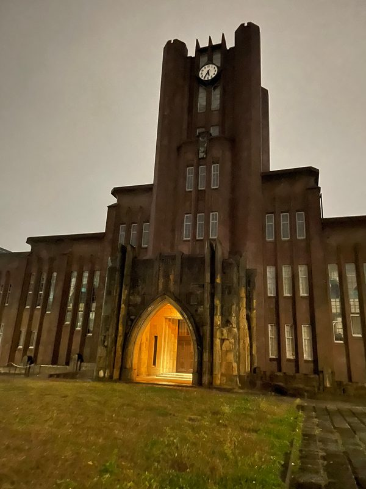

Contact
お問い合わせ・アクセスContact & Access
研究室へのお問い合わせ先と所在地、取材・講演・執筆のご依頼についてご案内します。How to reach us, where we are, and how to request media coverage or talks.
ご用件に合わせて、案内のページもご覧ください。Depending on your inquiry, these pages may help.
- 進学・募集Joining the lab大学院進学、インターン、研究員についてGraduate study, internships and research positions詳しく見るLearn more
- 共同研究・技術相談Joint research & consulting企業・研究機関の方へFor companies and organizations詳しく見るLearn more
- 取材・講演のご依頼Media & talks取材・講演・執筆のご依頼Media coverage, talks and writing詳しく見るLearn more
- 研究室へのご寄附Support our lab東京大学基金を通じたご寄附Giving through the UTokyo Foundation詳しく見るLearn more
Access & Contact
所在地・お問い合わせ先Location & Contact
進学を希望する方の研究室見学は、個別の日程調整による実施は原則として行っていません（各大学院の説明会に合わせて実施する予定です）。For prospective students, we do not, as a rule, arrange individual lab visits; visits are planned together with each graduate school’s information sessions.
研究室所在地Lab Location
〒113-8658 東京都文京区弥生2-11-16東京大学 情報基盤センター
浅野本館 Information Technology Center, Asano Main Building
The University of Tokyo
2-11-16 Yayoi, Bunkyo-ku, Tokyo 113-8658, Japan
最寄り駅アクセスNearest Stations
- 千代田線「根津駅」徒歩5分Nezu Sta. (Chiyoda Line): 5 min walk
- 南北線「東大前駅」徒歩10分Todaimae Sta. (Namboku Line): 10 min walk
- 丸ノ内線「本郷三丁目駅」徒歩15分Hongo-sanchome Sta. (Marunouchi Line): 15 min walk
お問い合わせContact
雨宮研究室 事務窓口:Lab office:
メールアドレスEmail address
Inquiries
取材・講演・執筆のご依頼Media, Talks & Writing
取材、講演、執筆のご依頼は、下記のアドレスまでご連絡ください。
技術顧問・コンサルティングのご相談は「共同研究・技術相談」をご覧ください。For media coverage, talks or writing, please contact us at the address below.
For technical advisory or consulting, see Joint Research & Consulting.
